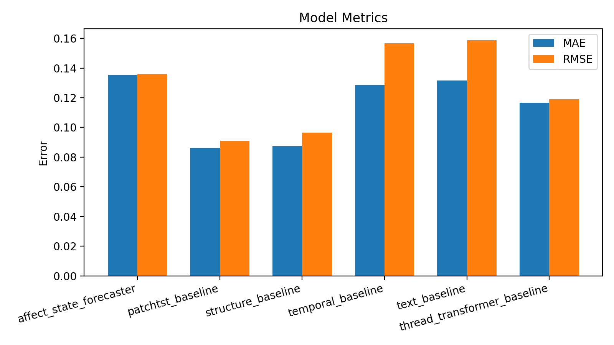
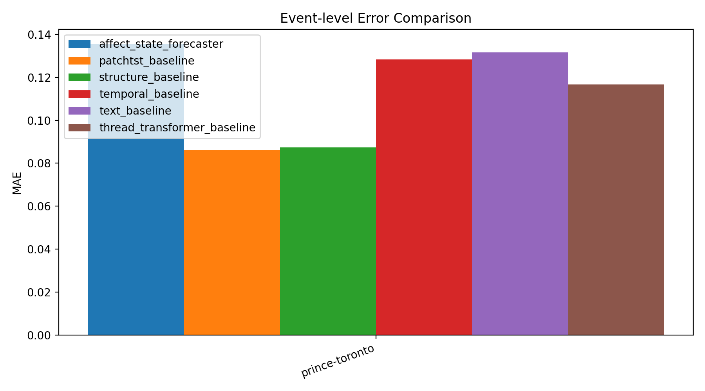
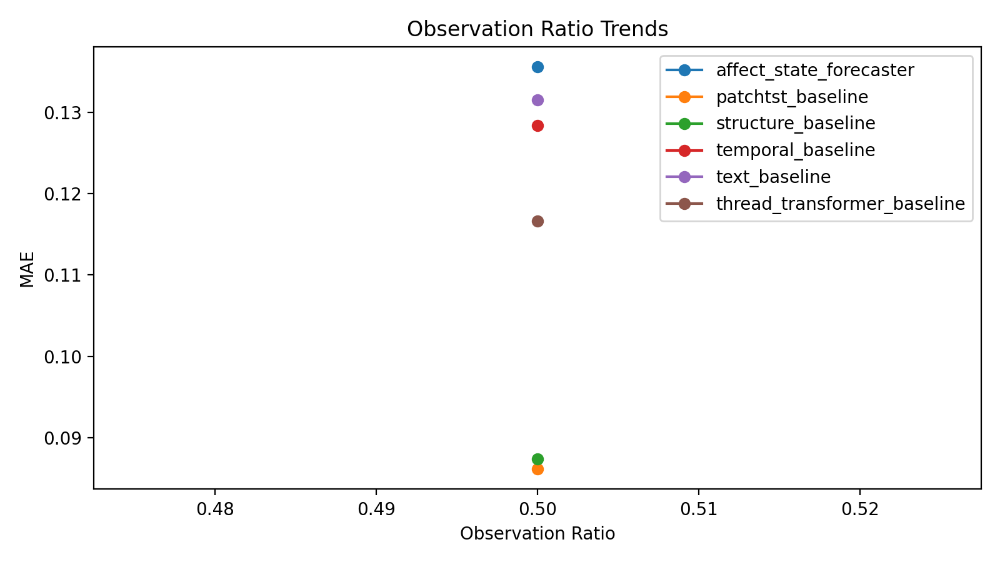

这个页面用于回答三件事：这轮实验为什么做、当前研究进展到了哪里、下一步为什么应该这样推进。
实验问题: 回填历史实验 `20260323_091953_cross_event_prince_toronto`，确认其对当前研究主线的支持程度。
成功标准: 能够生成完整报告，并对 idea.md 给出可读判断。
失败标准: 若历史结果缺失严重，则仅标记证据不足，不给过度结论。
对应 idea.md: 三、核心研究问题, 七、实验设计
数据: runs/20260323_091953_cross_event_prince_toronto
Ratio: unknown
模型: affect_state_forecaster, patchtst_baseline, structure_baseline, temporal_baseline, text_baseline, thread_transformer_baseline
参数: epochs=unknown, batch=unknown, device=unknown
总耗时(秒):
Warning 数: 0
Error 数: 0
最优模型: patchtst_baseline；与上一轮相比的最佳 MAE 变化: -0.0188
| Model | Status | MAE | RMSE | Pearson | Spearman |
|---|---|---|---|---|---|
| affect_state_forecaster | completed | 0.13563211262226105 | 0.1359708607196808 | 0.01438208173837893 | -0.13101394402234404 |
| patchtst_baseline | completed | 0.08612509816884995 | 0.09095459431409836 | 0.031226981622428616 | -0.04397994971335425 |
| structure_baseline | completed | 0.08739369362592697 | 0.0966239869594574 | 0.13209300480992786 | 0.04367131467411468 |
| temporal_baseline | completed | 0.12840251624584198 | 0.15657366812229156 | -0.22471567107763094 | -0.30569920271880274 |
| text_baseline | completed | 0.1315266638994217 | 0.15865999460220337 | 0.24491562054826252 | 0.30569920271880274 |
| thread_transformer_baseline | completed | 0.11665985733270645 | 0.11897159367799759 | 0.15485252689409226 | 0.04367131467411468 |
该图用于比较模型整体误差，当前 MAE 最优模型是 `patchtst_baseline`。

该图用于查看不同事件上的误差波动，帮助判断 cross-event 稳定性。

当前只有一个 observation ratio，因此该图主要起到占位作用，尚不能判断趋势。

可能原因: 当前显式 affect-state 表达未带来比结构特征更稳定的增益，或模型容量不足。
与 idea.md 的关系: 与 `idea.md` 中“显式情绪状态建模优于直接预测”主线存在张力。
建议: 先不新建 `idea.md`；继续做 affect-state 消融与正则化实验。若多轮复现同结论，再考虑新增结构优先版研究计划。
可能原因: 模型可能只学到了均值附近回归，未捕捉 thread 级差异。
与 idea.md 的关系: 削弱了“早期观测足以预测未来走势”的论点。
建议: 需要检查标签噪声、事件切分与模型表达；若多轮如此，再考虑修订研究主线。
决策: 继续，但先做诊断
原因: Affect-State 主线被当前结果削弱，需要先确认是实现问题还是假设问题。
下一步: 因此下一步是 优先做 affect-state 消融、正则化和去结构对比。，而不是继续无选择地堆实验。
是否建议新增 idea: 否